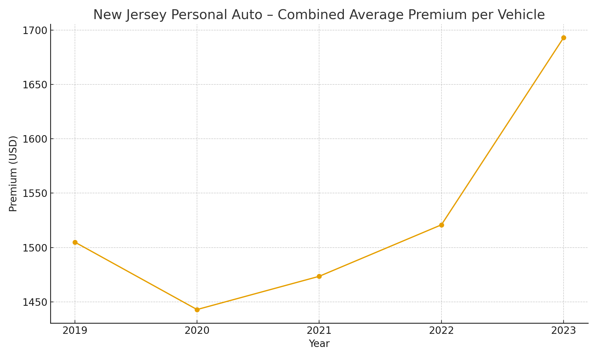
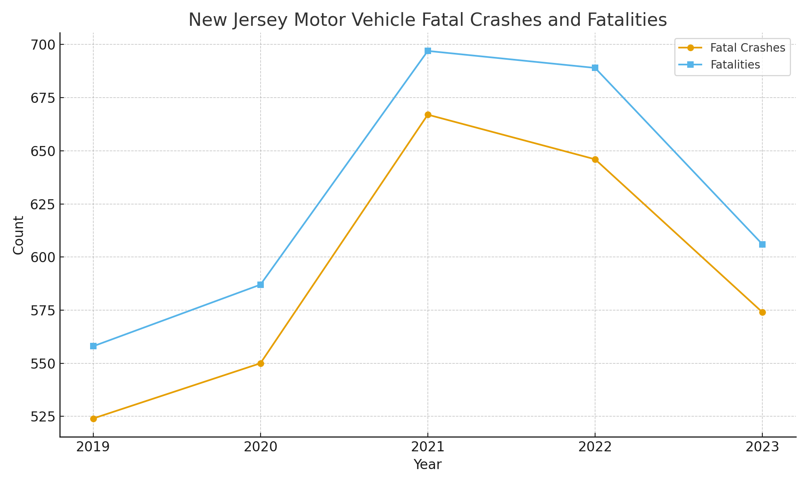

Small Business Specialists
Auto insurance pricing in New Jersey has been under sustained pressure from rising claim severity, higher repair and medical costs, and increased accident activity since the pandemic. These trends affect both personal auto and commercial auto policies.
According to the National Association of Insurance Commissioners (NAIC) , New Jersey’s combined average personal auto premium per insured vehicle increased from about $1,505 in 2019 to approximately $1,693 in 2023. Total written personal auto premium in the state grew from roughly $7.8 billion to more than $9.4 billion over the same period.
New Jersey State Police crash data shows that fatal crashes and fatalities increased sharply after 2020, peaking in 2021 and 2022 before improving slightly in 2023. Higher-speed accidents, distracted driving, and rising vehicle repair costs all contribute to more expensive claims.
Industry analyses summarized by NJ 101.5 / ValuePenguin show that New Jersey auto insurance premiums increased approximately 6% in 2023, followed by double-digit increases in 2024 and an additional 17.2% average increase in 2025. This places the expected average annual auto premium near $2,400.
In addition to claim trends, New Jersey law is increasing the minimum required auto liability limits under P.L.2022, c.87.
Need help reviewing your limits or managing rising costs? We can help you evaluate coverage, explain your options, and identify ways to control premiums without leaving dangerous gaps.